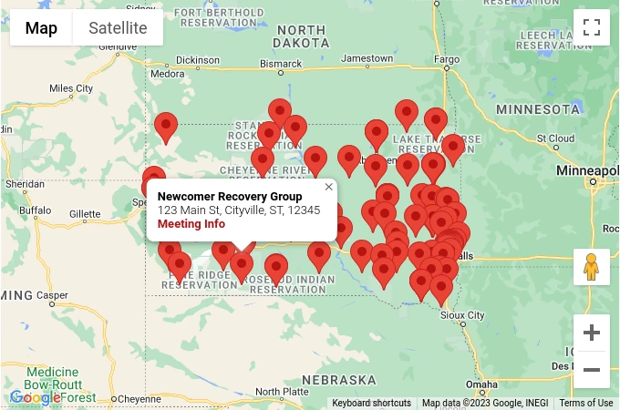

Using AAMod
This page is primarily intended for website editors who are comfortable working
with Hugo websites and covers all “features” provided by AAMod.
Feature Types
Shortcodes allow website editors to add content inside of markdown files.
Partials are similar to
Shortcodes, but used inside of template files.Layouts are “top-level templates” that link content to template.
Report List
Generates a list of links from a directory of files.
Type: Shortcode
Options:
base: Prefixed to
pathbefore disk search (required)path: Directory scanned for files and used for links (required)
Usage:
Recent Reports: {{< report-list base="static" path="content/treasury/" >}}
Demonstration: Input -> Output
Meeting Map
Generates an interactive google map plotted with meeting locations.
This requires mapapikey to be configured in site config.
Type: Shortcode
Options:
latitude: Default map center latitude (default: 0)
longitude: Default map center longitude (default: 0)
zoom: Default map zoom level (default: 7)
data: Root data key with meeting information (default: “meetings”)
Usage:
{{< meeting-map zoom=7 latitude=43.536388 longitude=-96.731667 >}}
Result:

Demonstration: Input -> Output
Meeting List
Generates lists of all meetings.
Type: Shortcode
Options:
mode: Display format of meeting list (default: time)
data: Root data key with meeting information (default: “meetings”)
time,address,interactive
Usage:
{{% meeting-list mode="time" %}}
Demonstration: Input -> Output
Meeting Info
Display information about a meeting.
This is primarily meant as “glue” that converts stubs, which were generated by the Prebuild process, into a display of information.
This requires mapapikey to be configured in site config.
Type: Shortcode
Options:
meeting_id: The
shortcode(or ID) of the meeting (required)data: Root data key with meeting information (default: “meetings”)
Usage:
{{< meeting-info meeting_id="risingtogether" >}}
Demonstration: Input -> Output
Meeting Guide
Generates the JSON required for integration with :ref:`Meeting Guide<meeting-guide>`.
Type: Shortcode
Options:
timezone: Default timezone when not specified by meeting (default: Africa/Asmara)
data: Root data key with meeting information (default: “meetings”)
Usage:
# content/meeting-guide.md --- outputs: [json] url: "/meeting-guide.json" --- {{< meeting-guide timezone="America/Los_Angeles" >}}
Result: The example usage will create a json file at /meeting-guide.json
Demonstration: Input -> Output